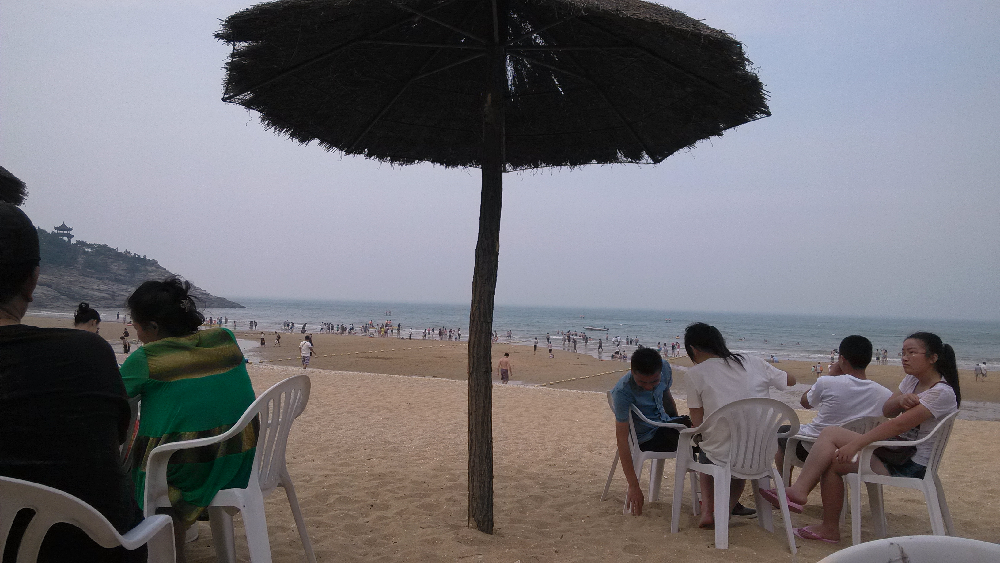
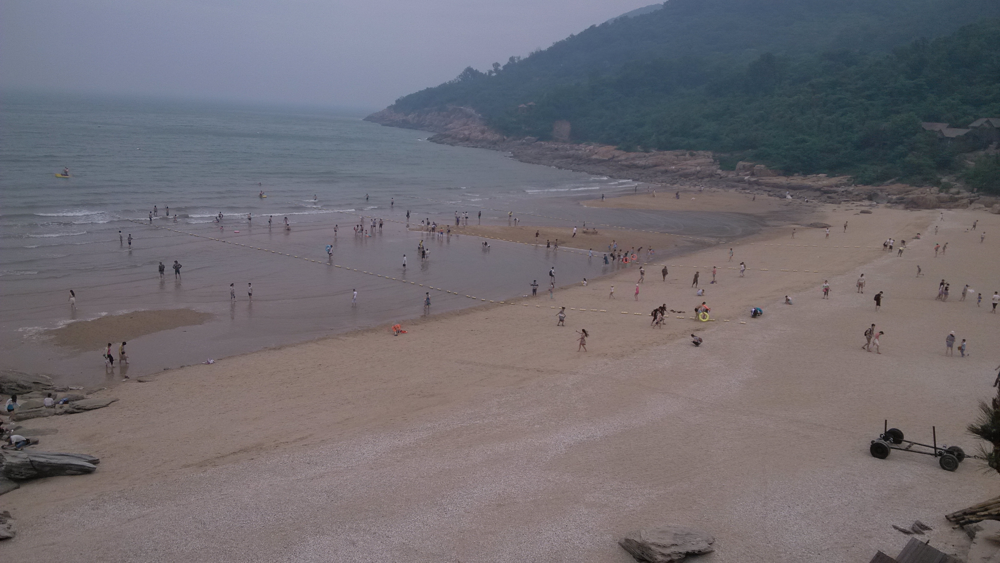
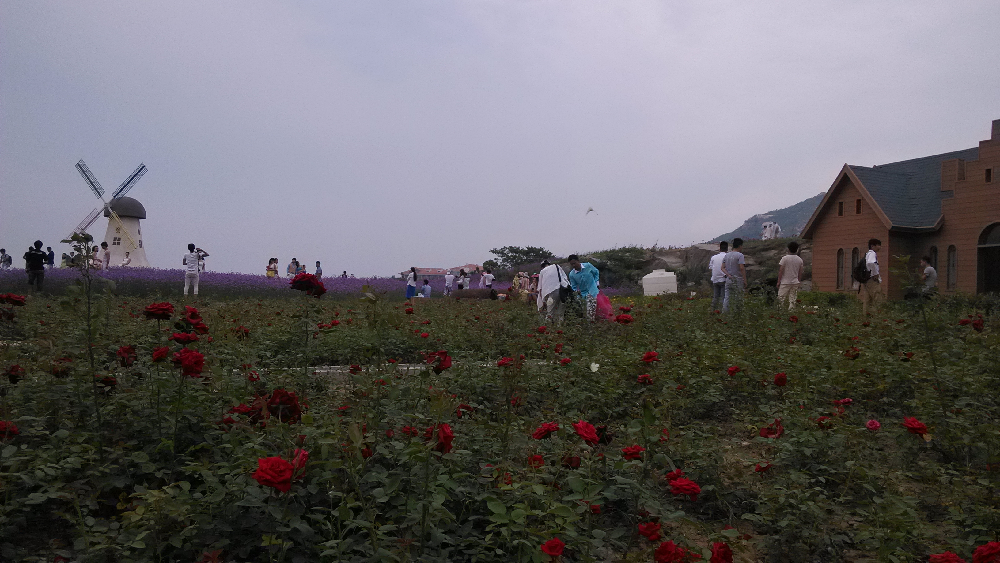
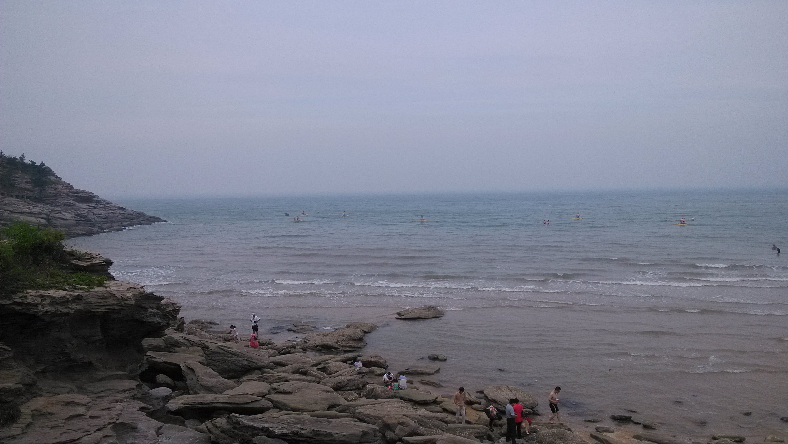
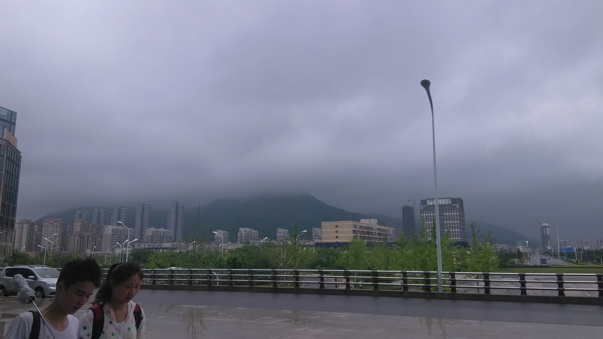

还记得这个沙滩吗？ 你曾说你想去海边，那年我们计划着去海边，终于我们将目的地定在了连云港，我还记得晚上跟你坐火车，两个人睡的硬卧，而且都是上铺，一边一个，我侧躺着看着你，还时不时的跟你打闹，在一夜的旅途睡眠中，第二天我们顺利到达连云港。
等我们达到连云港的时候，一下车我们急忙赶车去我们的目的地，我还记得，当时正在修路，我们还坐了好长时间的公交车，我们还找了好久的酒店，还记得第二天我们早起在海边吃的早餐吗？ 我还记得当时阳光好大，木质的桌椅，我还记得你当时拍了咱们吃早餐的照片，只可惜我没拍，现在看不到了~~
这是我们在最后一个海滩玩过后回去的风景，其实怪可惜的，在海边其实我两没玩什么，虽然当时天气还是比较热的，但是下水之后，还是有点凉，下水还没游一会儿就上来了，你还掉了一副我送你的眼镜，后来你还特别的懊悔。之后，原本想着能在海里找点贝壳之类的的有点纪念意义的东西送你，结果啥玩意也没找到，我还被岩石上密布的螺蛳壳划破了好几个小口子，加上海水的作用。哇！！那酸爽简直了~~
在这个沙滩上，发生了一件你我可能一辈子都不会忘记的事。 我想你应该猜到了。因为之前一直有午休的习惯，那天是在困得不行了，我居然在伴随着海浪声、海风声、人声的海边睡着了~ ^_^ !! 我现在都佩服我自己，但这也成了之后你一直吐槽我的地方~ 可能当时的感受不是特别好，但是现在回头过来想想却还觉得有点搞笑的，我相信这是其他情侣都不会走的事情吧~~ 哈哈~~
看到这张照片我就想起我们之前放弃坐车回去，而是决定走路回去，一路上我们开着玩笑，聊着、笑着仿佛什么烦恼都没有，而当我看到路边有人在拍婚纱照的时候，又看到这么美的风景，有玫瑰花，有荷兰风车，有薰衣草，有你，但是唯一的遗憾就是没有把你拍进照片中，有时候想想真的挺对不起你的，之前总是会忽略你的感受，现在想珍惜你了，但是这个机会你现在都不给我了~~ 就像这首歌一样，我不愿让你一个人，但我更不愿意把你交给别人，我会担心你，也放不下你，我怕那个人对你不好，我怕你又会像之前在我这儿一样在他那儿处处受气，看不惯你再受气，所以我不会轻易放开你，，如果你还给我机会的话，我以后会好好对你，让我能弥补之前对你的伤害，让我好好疼你~~
可能是这儿的海滩不是符合你理想中的海滩，回去路上，你说以后跟我一起再去一趟青岛，想去青岛的海滩上去看看，后来你真的去了青岛，但是我却不在你身边，你也没有再到沙滩上去~ 如果以后还有机会的话，我还是会带你去一次青岛的海滩的~ 这次是我带你去，路线规划，旅游景点全都我来负责，你不用再操一点心了，放心交给我就好了~~^_^
这张照片是我们临走之前快进火车站的时候，抓拍的，当时天上下着蒙蒙细雨。虽然在连云港的几天跟你有开心的时候，但也有争吵的时候，我一直都理解为是两个人的磨合过程，我还记得跟你在岛上吃着香辣蟹、皮皮虾，虽然被人坑了，但依然很开心，我们都说那个香辣蟹超级好吃，我也还记得，我们在市里面的水产市场里，为了吃鱼，我两还生闷气，搞得好不开心，现在想起来当时自己真幼稚。虽然只有短短的几天，在这几天的时间里我们有开心、快乐，有争吵、生气，但我觉得这一切都是值得的，起码现在回过头想想，嘴角还是会微微上扬，幸福的感觉还是会洋溢出来~~ 也许这就是生活，当时自己不懂，经历过了，失去过了，才知道有多珍贵，我还是会爱着你，因为你在我心里种下了一颗爱你的种子，前期你努力培养、呵护它，现在也不应该放弃它，现在是它长成大树回馈你，给你呵护的时候了~~
